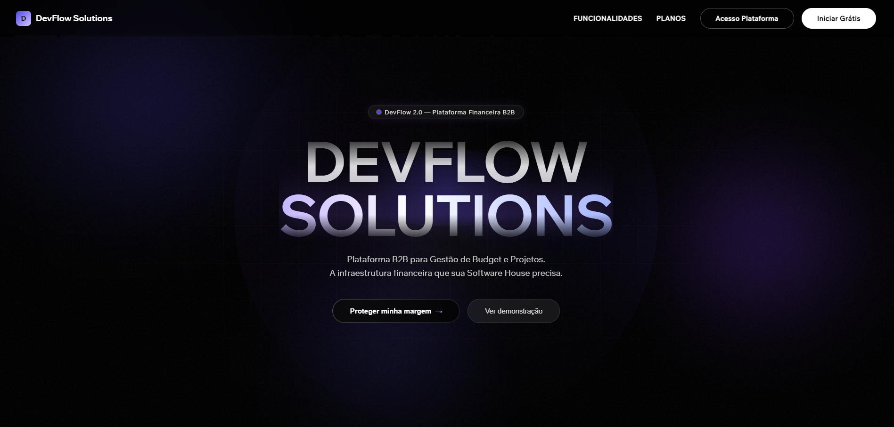
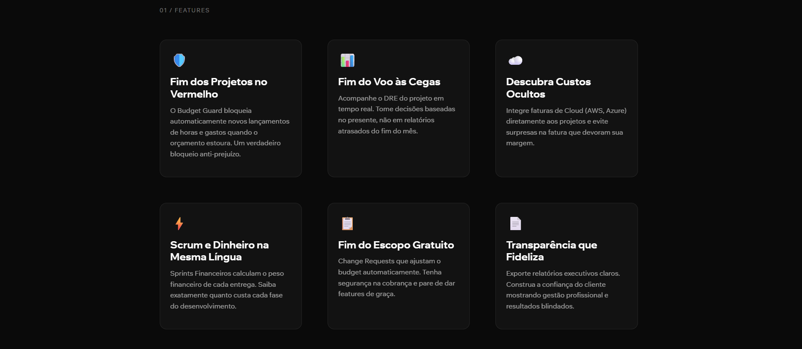
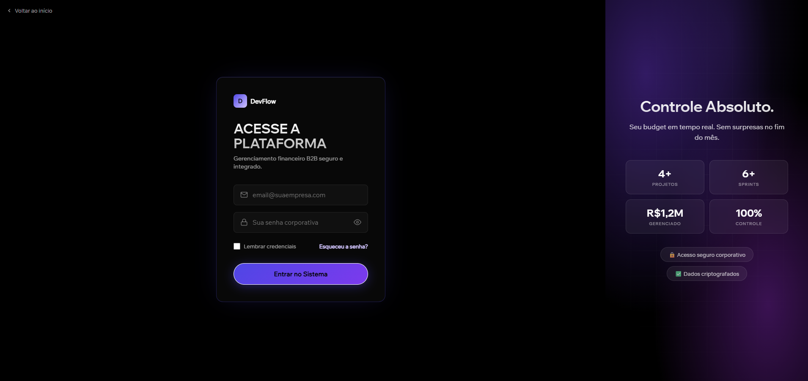
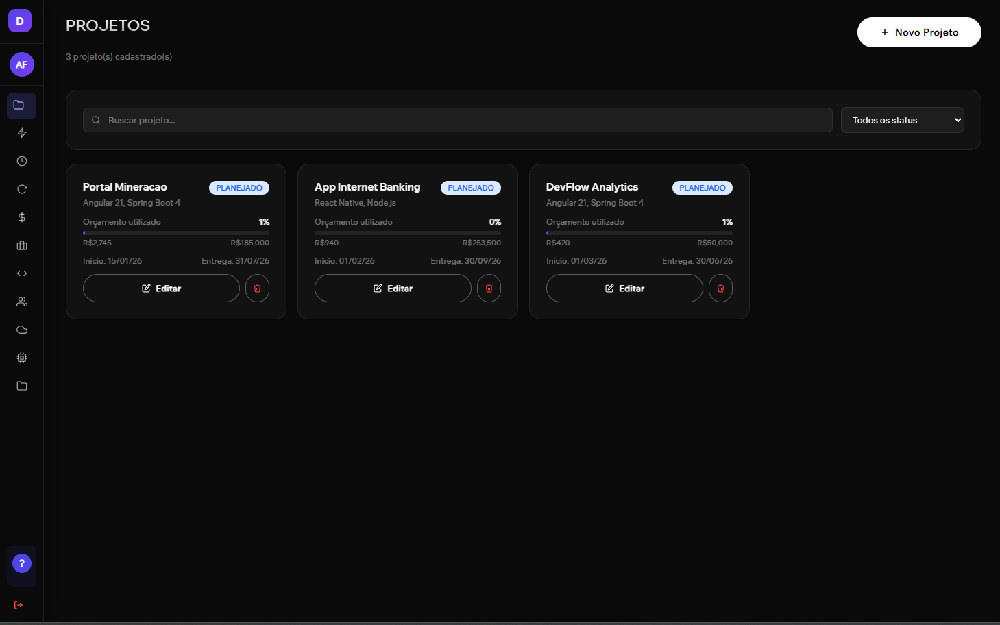
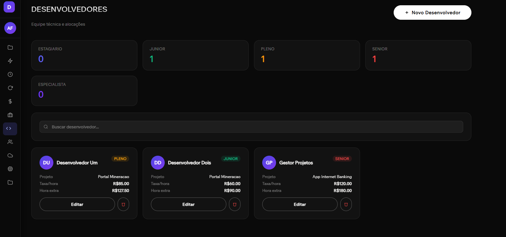
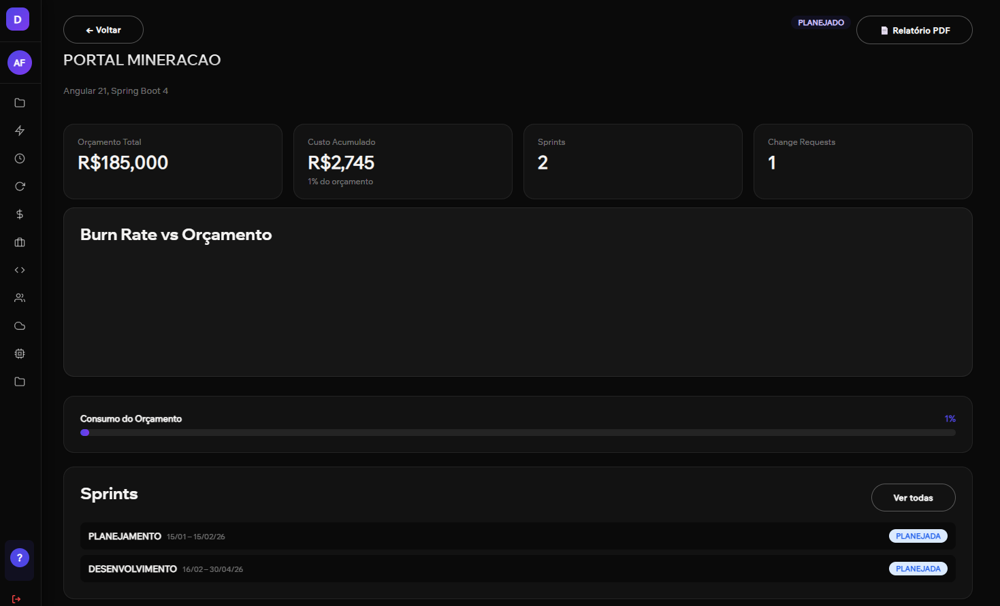

Projeto Integrador (PI) — 2026/01
Plataforma de Gestão de Projetos e Dashboards C-Level para análise de viabilidade financeira e controle de burn rate em tempo real.
Rogélio Claro Fraga
Backend & Engenheiro da Aplicação
Alexandre Farias Vieira
Frontend & Design de UX
João Gabriel B. A. Campos
Desenvolvedor Backend
Elias Coelho G. Fernandes
Desenvolvedor Frontend
Curso & Disciplina
Tecnologia em Análise e Desenvolvimento de Sistemas (ADS)
Projeto Integrador: Projeto e Implementação
Orientação Acadêmica:
Profª. Ms. Cristiane Divina Lemes Hamawaki
Contratos de desenvolvimento de software em modelo SaaS B2B comumente enfrentam o estouro de orçamento. Gestores sofrem pela falta de visibilidade imediata (Burn Rate) de recursos humanos alocados e insumos extras agregados.
Criar um motor inteligente que centraliza as faturas de Cloud (AWS/Azure/GCP) e Licenças de APIs externas, cruzando com os apontamentos atômicos de esforço de alocação de equipes (Timesheets) para entregar margem de lucro exata em tempo real.
O diferencial estratégico que elimina planilhas e relatórios reativos, aplicando proteção ativa e atômica diretamente no nível de dados.
Gera alertas aos gestores ao consumir 80% do budget, permitindo ações proativas de controle de escopo.
Garante via JPA (@PrePersist/@PreUpdate) rollback transacional absoluto a 100% do limite.
A Landing Page do DevFlow Solutions foi projetada de forma autoral para captar leads e apresentar a proposta de valor a diretores e C-Levels.
Construída com componentes Angular independentes (Standalone) e um design system elegante, ela conta com tipografia de ponta e transições fluidas, criando um forte impacto de credibilidade corporativa.

A seção de diferenciais destaca o propósito comercial e de negócio do DevFlow, traduzindo problemas financeiros comuns em soluções de software:
Acaba com o estouro de orçamentos e garante que o Scrum e o faturamento financeiro falem a mesma língua.
Garante relatórios executivos precisos para consolidar a fidelidade e a confiança de grandes clientes.

A tela de login é a porta de entrada para a plataforma e atua como validador de acesso aos workspaces corporativos.
O backend utiliza autenticação Stateless com JWT (JSON Web Token). Uma vez autenticado, o token é retido no frontend e injetado pelo interceptor do Angular em todas as chamadas subsequentes à API, garantindo isolamento total de dados por tenant e controle rigoroso de cargos (RBAC).

O painel de controle principal lista todos os projetos ativos sob responsabilidade do gestor ou administrador logado.
Cada projeto atua como um workspace financeiro independente, indicando o progresso de consumo de orçamento em tempo real. Apenas perfis com permissão apropriada (`ROLE_ADMIN` ou `ROLE_GESTOR`) visualizam os botões de edição ou criação de novos contratos.

Para que os apontamentos de esforço e o cálculo de DRE funcionem com precisão, o sistema conta com uma aba central de cadastro de equipes e recursos de desenvolvimento.
Define taxas de horas precisas baseando-se no nível de senioridade do profissional (Estagiário, Júnior, Pleno, Sênior ou Especialista).
Permite alocar os profissionais corretos aos seus respectivos contratos de atuação direta.

Ao abrir os detalhes de um projeto específico, o sistema exibe o **painel executivo financeiro completo e detalhado do contrato**.
Cruzamento em tempo real do orçamento total (ex: R$185.000) com os gastos reais apurados (ex: R$2.745).
Acompanhamento do número de sprints e Change Requests (solicitações de alteração de escopo) aprovadas e agregadas ao budget.
